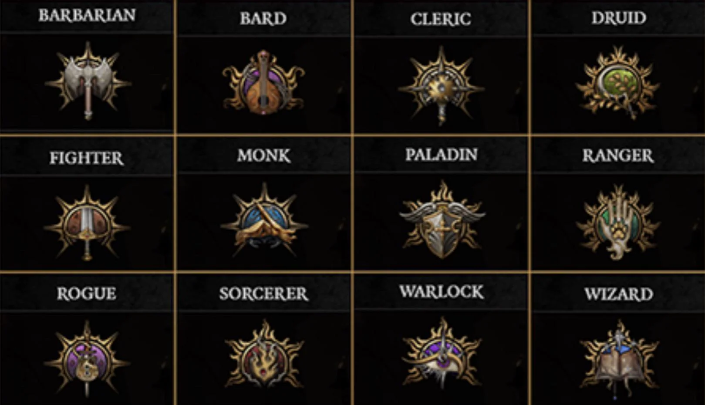
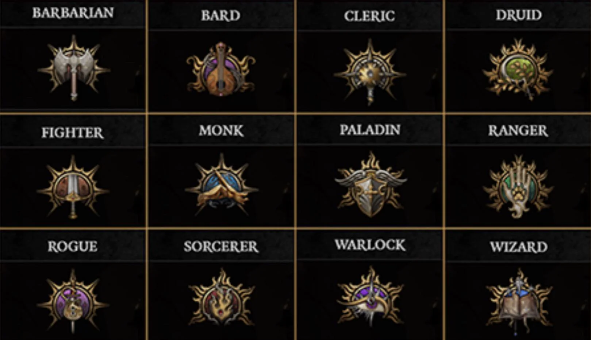

Baldur's Gate III
Here I will go in depth about one of my favorite games of all time, BG3.
 Baldur's Gate III is a modern RPG based on the Dungeon's and Dragons universe. It does an amazing job emmersing you in the different quests, side quests, and battles. Getting you attached to the characters and rightfully earning the title of "Game of the Year" in 2023 "Based on the fifth edition rules of the tabletop game Dungeons & Dragons (D&D 5e), several mechanics are identical between the two. A major feature is that outcomes are decided by rolling a twenty-sided die (d20). Some rolls occur with "advantage" or "disadvantage", meaning two d20s are rolled and the player receives the best or worst result, respectively." (Snippet from the WIki explaining the mechanics of the game and how they relate to D&D)

Baldur's Gate III is a modern RPG based on the Dungeon's and Dragons universe. It does an amazing job emmersing you in the different quests, side quests, and battles. Getting you attached to the characters and rightfully earning the title of "Game of the Year" in 2023 "Based on the fifth edition rules of the tabletop game Dungeons & Dragons (D&D 5e), several mechanics are identical between the two. A major feature is that outcomes are decided by rolling a twenty-sided die (d20). Some rolls occur with "advantage" or "disadvantage", meaning two d20s are rolled and the player receives the best or worst result, respectively." (Snippet from the WIki explaining the mechanics of the game and how they relate to D&D)
